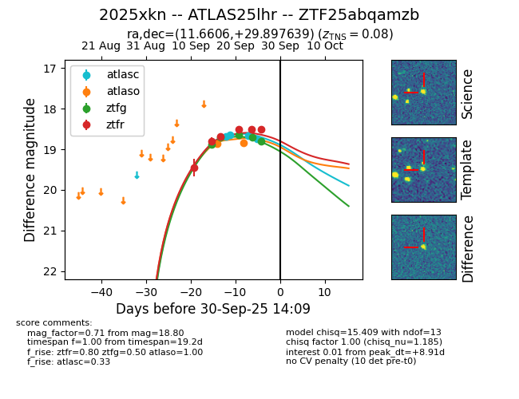
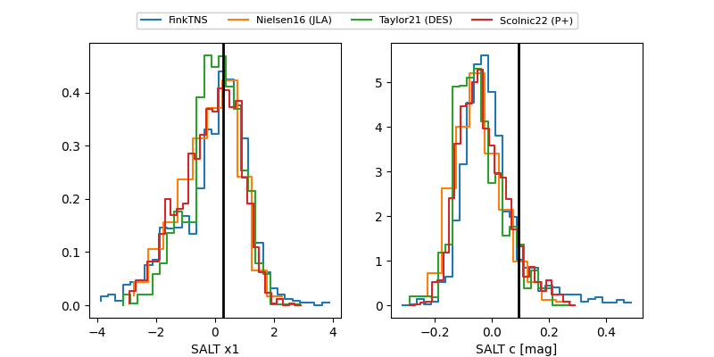

FINK: ZTF25abqamzb
Lasair: ZTF25abqamzb
ALeRCE: ZTF25abqamzb
TNS: 2025xkn
YSE: 2025xkn
ZTF25abqamzb (ztf,fink)
2025xkn (tns,yse)
ATLAS25lhr (atlas)
equatorial (ra, dec) = (11.6606,+29.89764)
galactic (l, b) = (121.6932,-32.96257)


last atlasc=18.75, atlaso=18.84, ztfg=18.80, ztfr=18.51
4 atlasc, 2 atlaso, 5 ztfg, 6 ztfr detections